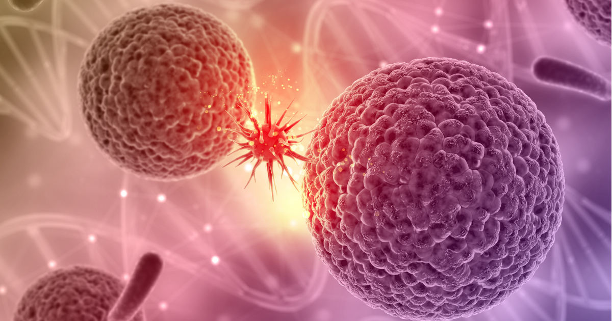

ကျားကျားတို့ သတိထားစရာ ကင်ဆာလက္ခဏာများ

ကင်ဆာရောဂါဆိုတာ ဘာလက္ခဏာမှမပြဘဲ ခန္ဓာကိုယ်ထဲမှာ တရိပ်ရိပ် ကြီးထွားလာနိုင်တဲ့ ကြောက်စရာရောဂါ တစ်ခုပါ။ ကင်ဆာရောဂါကို အဆင့်လိုက်ခွဲခြားနိုင်ပြီး အဆင့်ပိုများလေ ကြောက်စရာကောင်းလေ၊ ကုသရခက်ခဲလေပါ။ အခု ဆောင်းပါးမှာတော့ အမျိုးသားတွေမှာ ဖြစ်တတ်တဲ့ ကင်ဆာရောဂါ တချို့ရဲ့ ရှေ့ပြေးလက္ခဏာတွေကို ပြောပြသွားမှာ ဖြစ်ပါတယ်။ ကိုယ့်ခန္ဓာကိုယ်က ပုံမှန်မဟုတ်တဲ့ ဘယ်ဖြစ်စဉ်တွေကို သတိထားသင့်သလဲဆိုတာ သိရဖို့ ဆက်လေ့လာကြည့်ကြရအောင်ပါ။
ဆီးသွားရခက်တယ်
ဆီးသွားရခက်တာ၊ ဆီးသွားပြီးရင် ဆီးကျန်နေသလိုခံစားရတာ၊ ဆီးထဲမှာ သွေး ဒါမှမဟုတ် သုတ်ရည်ပါလာတာ၊ ဒါမှမဟုတ်လည်း လိင်အင်္ဂါက လိုအပ်တဲ့အချိန်တောင့်တင်းမလာတာ ဒီလက္ခဏာတွေ အားလုံးက ဆီးကျိတ်ကင်ဆာရဲ့ ရှေ့ပြေးလက္ခဏာတွေ ဖြစ်နိုင်ပါတယ်။ အမျိုးသားတွေအနေနဲ့ အသက် ၄၀ အထက်ဆို ဆီးကျိတ်ကျန်းမာရေးကို အထူးဂရုပြုသင့်ပါတယ်။ ဘာကြောင့်လဲဆိုတော့ ဆီးကျိတ်ကင်ဆာက အဆင့် အရမ်းမြင့်မလာခင် ဘာလက္ခဏာမှ သိသိသာသာ မပြတတ်လို့ပါ။ အပေါ်က လက္ခဏာတွေပေါ်လာတာ ၆ လနဲ့အထက် ဖြစ်နေပြီဆို ဆီးလမ်းကြောင်း သမားတော်တစ်ယောက်ယောက်နဲ့ ပြသကြည့်သင့်ပါပြီ။
ကပ္ပါယ်အိတ်ကို ဂရုစိုက်ပါ
အမျိုးသမီးတွေအနေနဲ့ ရင်သားကို ပုံမှန်စမ်းသပ်စစ်ဆေးပြီး ရင်သားကင်ဆာကို ကာကွယ်သလိုပဲ အမျိုးသားတွေလည်း ကပ္ပါယ်အိတ်ကို ဂရုစိုက်ပါ။ နှစ်ဖက်စလုံးမှာဖြစ်စေ၊ တစ်ဖက်ဖက်မှာဖြစ်စေ ရောင်ရမ်းလာတာ၊ အရွယ်အစား မတူတော့တာ၊ အရမ်းဖောင်းကားလာတာ စတဲ့ လက္ခဏာတွေပြလာရင် ကပ္ပါယ်အိတ်ကင်ဆာ ဖြစ်နိုင်ပါတယ်။ ငယ်တဲ့ အမျိုးသားတွေနဲ့ လူလတ်ပိုင်း အမျိုးသားတွေ ပိုဂရုစိုက်သင့်ပါတယ်။
အရေပြားကျန်းမာရေးလည်း အရေးကြီးတယ်
အသက် ၅၀ ကျော် အမျိုးသားတွေဟာ အမျိုးသမီးတွေထက် အရေပြားကင်ဆာဖြစ်ပြီးသေဆုံးနိုင်ခြေ နှစ်ဆလောက်ပိုများပါတယ်။ ဘာ့ကြောင့်လဲဆိုရင် အမျိုးသားတွေက နေပူထဲပိုထွက်လေ့ရှိကြသလို နေလောင်ခံခရင်မ်လည်း သိပ်လိမ်းလေ့မရှိလို့ဆိုတာ တွေ့ရပါတယ်။ ဒါကြောင့် အမျိုးသားတွေအနေနဲ့ ကိုယ့်အရေပြားပေါ်မှာ မှဲ့ခြောက်တွေ၊ အနီကွက်တွေ၊ အလုံးအကျိတ်တွေ ထွက်လာတာ သတိထားမိရင် အရေပြားဆရာဝန်နဲ့ ပြသကြည့်ဖို့သင့်ပါတယ်။
ပါးစပ်ထဲမှာ အပူနာတွေ ပေါက်သလား
လူတိုင်းတစ်သက်မှာ တစ်ခါတော့ ပါးစပ်ထဲမှာ အပူနာခေါ်တဲ့ အဖြူရောင် အနာလေးတွေ ပေါက်ဖူးကြပါတယ်။ အများအားဖြင့် ၂ ပတ်လောက်ကြာတတ်ပြီး ပြန်ပျောက်သွားလေ့ရှိပေမဲ့ အချိန်အကြာကြီးဖြစ်နေပြီး မပျောက်ရင် ခံတွင်းကင်ဆာရဲ့ ရှေ့ပြေးလက္ခဏာဖြစ်နိုင်တာမို့ သွားနဲ့ ခံတွင်းဆရာဝန်နဲ့ ပြသကြည့်စေလိုပါတယ်။ ဆေးလိပ်သောက်တဲ့သူ၊ ကွမ်းအဝါးများတဲ့သူတွေမှာ ခံတွင်းကင်ဆာ အဖြစ်များတာကိုလည်း တွေ့ရှိရပါတယ်။
ချောင်းအကြာကြီးဆိုးနေမယ်
ရာသီဥတု အပြောင်းအလဲကြောင့် ရံဖန်ရံခါချောင်းဆိုးတာ ဖြစ်တတ်ပေမဲ့ အချိန် ၃ ပတ် ထပ်ကြာအောင် ချောင်းဆိုးမယ်ဆိုရင်တော့ သတိထားသင့်ပါပြီ။ အဆုတ်တီဘီရောဂါ၊ အဆုတ်ကင်ဆာ၊ အဆုတ်လေပြွန်ရောင်ရောဂါ စတဲ့ရောဂါတွေရဲ့ ရှေ့ပြေးလက္ခဏာတွေထဲမှာ အချိန်အကြာကြီး ချောင်းဆိုးတာလည်း ပါဝင်နေလို့ပါ။
ဝမ်းထဲ သွေးပါနေတယ်
ဝမ်းထဲသွေးပါတာ လိပ်ခေါင်းလို သိပ်အန္တရာယ် မရှိတဲ့ ရောဂါကြောင့်လည်း ဖြစ်နိုင်သလို အူမကြီးကင်ဆာရဲ့ ရှေ့ပြေးလက္ခဏာလည်း ဖြစ်နေနိုင်ပါတယ်။ ဝမ်းအရမ်းချုပ်လို့ ညှစ်တဲ့အခါ သွေးပါရောထွက်လာတာမျိုးက ကိစ္စမရှိပေမဲ့ ခဏခဏ ဖြစ်နေရင်တော့ သေချာ စစ်ဆေးသင့်ပါပြီ။ အသက် ၅၀ ကျော်အမျိုးသားတွေကတော့ တစ်နှစ်ကိုတစ်ခါ အူလမ်းကြောင်း စစ်ဆေးမှု သေချာလုပ်သင့်ပါတယ်။
မကြာခဏ ဖျားနာတယ်
အရင်တုန်းက ကျန်းမာပေမဲ့ နောက်ပိုင်းမှာ ခဏခဏ ဖျားနာလာတယ်ဆို သွေးကင်ဆာရောဂါရဲ့ အစောပိုင်း လက္ခဏာ ဖြစ်နိုင်ပါတယ်။ ဒီသွေးရောဂါက ကိုယ်တွင်းက သွေးဖြူဥတွေ ထုတ်လုပ်မှုကို ပုံမမှန်ဖြစ်စေတာမို့ ခန္ဒာကိုယ်ရဲ့ ကာကွယ်နိုင်စွမ်းကို ကျဆင်းလာစေပါတယ်။ ဒါကြောင့် သွေးကင်ဆာ လူနာတွေမှာ ပြင်ပရောဂါတွေ အင်မတန် ဝင်လွယ်တာကို တွေ့ရပါတယ်။
အညိုအမဲ စွဲတယ်
ထိမိခိုက်မိလို့ ဒဏ်ရာရ အညိုအမဲစွဲတာ ပြဿနာမဟုတ်ပေမဲ့ အလိုလိုနေရင်း အညိုအမဲကွက်တွေ ပေါ်လာရင်တော့ သတိထားပါ။ သွေးရဲ့ အောက်ဆီဂျင် သယ်ဆောင်နိုင်စွမ်းကို တဖြည်းဖြည်း လျော့ကျလာစေပြီး သွေးခဲနိုင်စွမ်း ကျဆင်းလာတာကြောင့် အညိုအမဲစွဲတာဖြစ်ပြီး ဒါဟာ သွေးကင်ဆာရောဂါရဲ့ အစောပိုင်း လက္ခဏာတစ်ခုလည်း ဖြစ်နေတာကြောင့်ပါ။
ဘာကြောင့်မှန်းမသိပဲကိုယ်အလေးချိန်ကျသွားတယ်
ဘာမှမလုပ်ရဘဲ ပိန်သွားတယ်ဆိုလို့ ဝမ်းသာမစောပါနဲ့အုံး။ Gym ဆော့လို့၊ အစားလျှော့စားလို့ ကိုယ်အလေးချိန် ကျသွားတာကောင်းပေမဲ့ ဘာမှလည်းမလုပ်ရဘဲ အရမ်းပိန်သွားတယ်ဆိုရင် အစာမျိုပြွန်ကင်ဆာ၊ အသည်းကင်ဆာ၊ အူမကြီးကင်ဆာ၊ မုန့်ချိုအိတ်ကင်ဆာ၊ သွေးကင်ဆာ စတဲ့ ရောဂါတွေကြောင့်လည်း ဖြစ်နိုင်ပါသေးတယ်။
အမြဲ ပင်ပန်းနွမ်းနယ်နေသလို ခံစားရတယ်
လူတိုင်းက အလုပ်လုပ်နေရတော့ ပင်ပန်းမှာပါပဲ။ သို့ပေမဲ့လည်း လုံလုံလောက်လောက် နားနေပြီးတာတောင် အားနည်းနေသလိုခံစားရမယ်၊ အသက်ရှူမဝဘူး၊ မူးဝေဝေဖြစ်နေမယ် စတဲ့ လက္ခဏာတွေ ခံစားနေတာ အချိန်တစ်ခုထိကြာမြင့်လာပြီဆိုရင်တော့ ဆရာဝန်နဲ့ ပြသကြည့်စေလိုပါတယ်။
ခေါင်းခဏခဏ ကိုက်တယ်
အရင်ကလည်း ခေါင်းကိုက်တာမျိုး ဖြစ်လေ့ဖြစ်ထမရှိပဲနဲ့ အခုမှ ခေါင်းတစ်ခြမ်းကိုက်တာမျိုး၊ ခေါင်းကြီး အုံခဲနေတာမျိုးတွေ ခဏခဏဖြစ်နေရင်တော့ ဦးနှောက်ထဲမှာ အကျိတ်တည်ပြီး အာရုံကြောတစ်ခုခုကို ဖိမိတာကြောင့် ဖြစ်နိုင်ပါတယ်။
ဒါတွေကတော့ အမျိုးသားတွေမှာဖြစ်လေ့ရှိတဲ့ကင်ဆာရောဂါတွေကို ကြိုတင်သိရှိနိုင်မဲ့ ရှေ့ပြေးလက္ခဏာတွေ ဖြစ်ပါတယ်။ ကင်ဆာလိုရောဂါက ကြောက်ဖို့ကောင်းပေမဲ့ စောစောစီးစီးသိရှိပြီး ကုသနိုင်ရင်တော့ အသက်ရှင်နိုင်နှုန်း မြင့်မားတာကြောင့် မပေါ့ဆကြဘဲ ဆရာဝန်နဲ့ ပုံမှန်ပြသပြီး ကျန်းမာရေး စောင့်ရှောက်မှုခံယူကြဖို့ အကြံပြုလိုပါတယ်။
Source-Dr.Barry